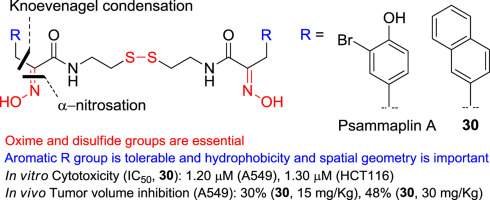

Psammaplin :
Psammaplin A (PsA) (34) is an anticancer compound isolated from Poecillastra sp. and Jaspis sp.
It was first isolated from Psammaplin aplysilla sea sponges . PsA and biprasin are present in marine
microalgae, cyanobacteria, and in the heterotrophic bacteria living in association with invertebrates (e.g.,
sponges, tunicates, and soft corals). Psammaplin A is a phenolic compound containing a disulphide bridge; it
occurs in nature in the form of monomers or dimers. Additionally, psammaplin A contains a bromotyrosine ring.
PsA exhibits varying effects on different pathways. Psammaplin A was synthesized by Hoshino and co-workers
(1992)
- Origin
Poecillastra sp.,
Jaspis sp., Psammaplin aplysilla
marine microalgae,
cyanobacteria,
heterotrophic bacteria living in association with the invertebrates (e.g., sponges, tunicates, and soft
corals)
- Structure-Activity Relationship (SAR)

- Mechanism Of Action
antiproliferative effects,
selectively induces genes related to cell-cycle arrest and apoptosis
inhibits the activity histone deacetylase (HDAC), chitinase topoisomerase II, farnesyl-protein transferase,
leucine aminopeptidase,
- Target cells
human endometrial Ishikawa cancer cells